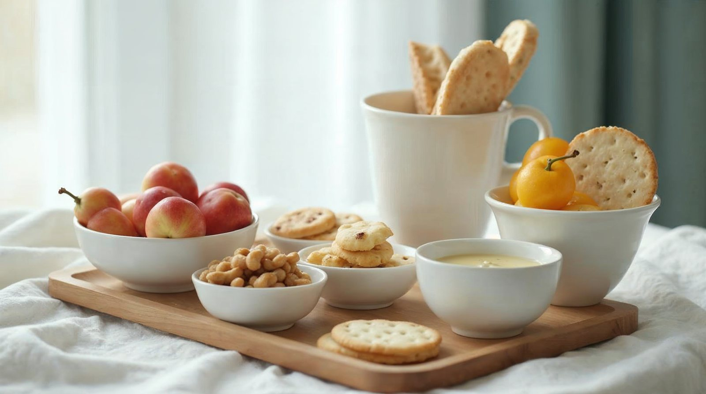
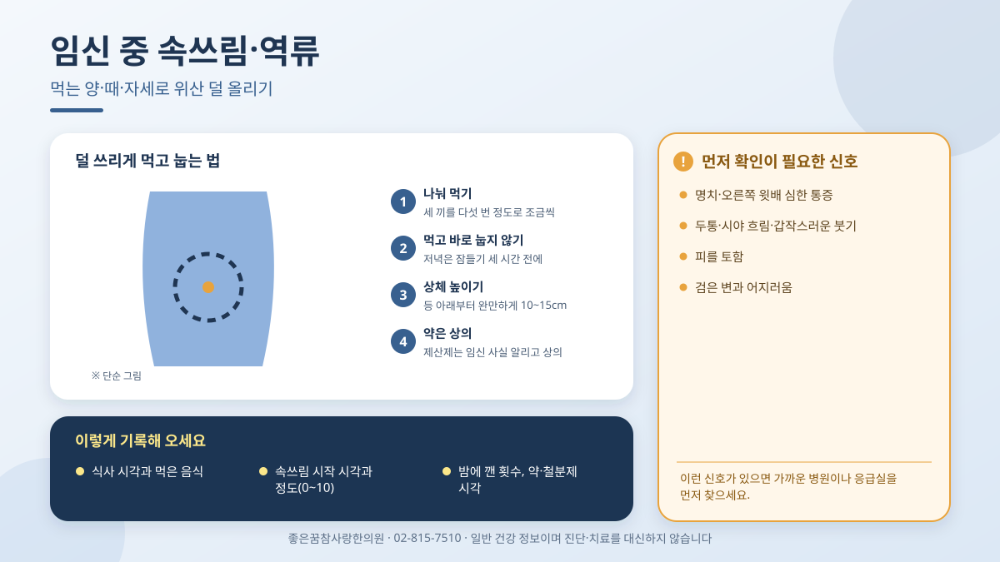

이종호 한의사 감수좋은꿈참사랑한의원 대표원장 (한의사 면허번호 19769)발행 2026-11-26 · 수정 2026-11-26
이 글의 차례
저녁을 먹고 소파에 기대앉았는데 가슴 한가운데가 화끈거립니다. 목구멍까지 시큼한 것이 올라와 침을 몇 번이나 삼킵니다. 누우면 더 심해질까 봐 잠자리에 드는 것도 망설여지고, 결국 베개를 세 개나 쌓고 반쯤 앉은 채로 잠을 청합니다. 임신 전에는 매운 음식을 먹어도 끄떡없었는데, 요즘은 밥 한 공기도 버겁습니다.
임신 중 속쓰림은 진료실에서 아주 흔하게 듣는 불편입니다. 특히 임신 후기로 갈수록 "가슴이 타는 것 같다", "누우면 신물이 올라온다"고 말씀하시는 분이 많습니다. 아기에게 문제가 있는 것은 아닌지 걱정하시지만, 대부분은 임신 중 몸이 바뀌면서 생기는 흔한 변화입니다.
속쓰림이 이어지면 입맛이 떨어지고 밤잠을 설치게 됩니다. 그렇다고 참기만 하기보다, 위산이 덜 올라오도록 먹는 방법과 눕는 방법을 조금 바꾸는 것만으로도 한결 편해지는 경우가 많습니다. 다만 임신 후기에 생긴 심한 윗배 통증은 속쓰림과 따로 확인해야 할 때가 있습니다.
이 글에서는 임신 중 속쓰림과 역류가 왜 생기는지, 식사와 잠자리에서 해 볼 수 있는 요령, 약은 어떻게 상의하는지, 한의원에서 함께 살필 수 있는 부분을 정리했습니다.
왜 임신 중에는 속쓰림이 잘 생기나요?
위와 식도 사이에는 위산이 거꾸로 올라오지 않도록 막아 주는 문 같은 근육이 있습니다. 임신하면 늘어나는 프로게스테론이 이 근육을 느슨하게 만들어, 위산이 식도로 올라오기 쉬워집니다. 같은 호르몬이 위의 움직임도 느리게 해서 음식이 위에 오래 머무릅니다.
임신 중기 이후에는 커진 자궁이 위를 위로 밀어 올립니다. 위가 눌린 상태에서 음식을 먹으면 위 안의 압력이 높아지고, 위산이 위로 올라오기 더 쉬워집니다. 그래서 배가 불러 올수록, 특히 막달에 가까워질수록 속쓰림이 심해지는 분이 많습니다.
한 번에 많이 먹은 날, 기름지거나 매운 음식을 먹은 날, 먹고 바로 누운 날에 더 심해집니다. 커피나 탄산음료, 초콜릿, 신 과일도 사람에 따라 속쓰림을 키울 수 있습니다. 입덧 시기에 토를 자주 했다면 그때부터 식도가 예민해져 있는 경우도 있습니다.
한의학에서는 임신 중 속이 쓰리고 신물이 오르는 것을 위의 기운이 아래로 내려가지 못하고 위로 치받는 흐름으로 보기도 합니다. 소화가 더디고 트림이 잦으며 가슴이 답답한지, 몸에 열이 오르는 편인지를 함께 살핍니다.
속쓰림과 따로 살펴야 할 윗배 통증은 어떻게 다른가요?
흔한 속쓰림과 역류
가슴 한가운데나 명치가 화끈거리고, 신물이나 쓴 물이 목까지 올라옵니다. 먹은 뒤나 누웠을 때 심해지고, 앉거나 일어서면 조금 나아집니다. 트림이 잦고 속이 더부룩한 느낌이 함께 오기도 합니다.
혈압과 관련될 수 있는 윗배 통증
임신 후기에 명치나 오른쪽 윗배가 심하게 아프면서 두통, 시야가 흐려지는 느낌, 얼굴과 손의 갑작스러운 붓기가 함께 온다면 속쓰림이 아니라 혈압과 관련된 변화일 수 있습니다. 이때는 제산제로 버티지 말고 바로 산부인과에 연락하셔야 합니다.
담낭이나 다른 원인
기름진 음식을 먹은 뒤 오른쪽 윗배가 쥐어짜듯 아프고 등이나 어깨로 뻗치거나, 열과 함께 피부나 눈이 노랗게 보인다면 담낭 쪽 문제를 생각해야 합니다. 임신 중에는 담석이 생기기 쉬운 편이라 이런 통증은 따로 확인이 필요합니다.
위나 식도 쪽 출혈
피를 토하거나 커피 찌꺼기 같은 것이 섞여 나오고, 변이 검게 나온다면 위나 식도에서 피가 나는 경우일 수 있습니다. 철분제를 드시면 변이 검게 나올 수 있어 헷갈리지만, 어지럼과 함께라면 병원에서 확인을 받으셔야 합니다.
스스로 점검해 보세요
해당하는 줄에 표시해 두셨다가 진료 때 보여 주세요.
- 먹은 뒤 가슴 한가운데가 화끈거린다
- 누우면 신물이나 쓴 물이 올라온다
- 한 번에 많이 먹으면 더 심하다
- 밤에 속쓰림 때문에 깬다
- 트림이 잦고 속이 더부룩하다
- 커피나 탄산음료를 마신 날 더 심하다
- 명치나 오른쪽 윗배가 심하게 아프고 두통이 함께 온다
위의 여섯 줄은 흔한 속쓰림에 가까운 모습이고, 마지막 줄에 해당한다면 산부인과에 먼저 연락하세요.
먼저 이렇게 여쭙니다
임신 중 속쓰림으로 오신 분께는 대략 이런 순서로 여쭙니다.
- 지금 임신 몇 주이고, 산부인과 다음 진료는 언제인가요?
- 속쓰림은 하루 중 언제, 무엇을 먹은 뒤 심한가요?
- 신물이 목까지 올라오나요? 밤에 깨기도 하나요?
- 임신 전에도 속쓰림이나 위염이 있었나요?
- 제산제나 위장약을 드신 적이 있나요?
- 저녁 식사 시각과 잠드는 시각은 어떻게 되나요?
- 대변과 입맛, 잠은 어떤가요?
임신 전에 위염이나 역류성 식도염으로 진료를 받은 적이 있다면 그때 들은 이야기와 드셨던 약도 알려 주세요. 원래 위가 예민했던 분은 임신 중 속쓰림이 더 일찍, 더 크게 올 수 있어 식사 요령을 조금 더 꼼꼼하게 함께 짭니다.
철분제를 드시는지도 여쭙니다. 철분제가 속을 쓰리게 하거나 메스껍게 하는 분이 있어, 먹는 시간이나 방법을 산부인과와 상의해 볼 수 있는지 함께 이야기합니다.
일상에서 먼저 해 볼 수 있는 것
속쓰림은 먹는 양과 때, 먹은 뒤의 자세를 바꾸는 것만으로도 덜어지는 경우가 많습니다. 하나씩 골라 시작해 보세요.
- 하루 세 끼를 다섯 번 정도로 나눠 조금씩 먹기
- 천천히 꼭꼭 씹어 먹고, 식사 중 물을 한꺼번에 많이 마시지 않기
- 먹은 뒤 두세 시간은 눕지 말고, 저녁은 잠들기 세 시간 전에 마치기
- 기름진 음식, 매운 음식, 커피, 탄산음료를 줄여 보기
- 잘 때 상체를 10~15cm 정도 완만하게 높이기
- 배를 조이지 않는 넉넉한 옷 입기
잠자리에서는 베개만 여러 개 쌓으면 목만 꺾이고 배는 오히려 접혀 더 불편할 수 있습니다. 등 아래부터 완만하게 높이도록 쿠션이나 경사진 베개를 받치시면 좋습니다. 옆으로 누울 때는 왼쪽으로 눕는 자세가 역류를 덜 일으킨다고 알려져 있어, 임신 중 권하는 자세와도 잘 맞습니다.
어떤 음식이 속쓰림을 부르는지는 사람마다 다릅니다. 토마토나 귤 같은 신 음식이 힘든 분도 있고, 양파나 마늘, 박하가 힘든 분도 있습니다. 며칠 기록해 보면 내 속을 괴롭히는 음식이 보이니, 모두 한꺼번에 끊기보다 나에게 맞지 않는 것만 골라 줄이시면 됩니다.
속이 쓰릴 때 우유를 마시면 잠깐 편해지는 분도 있지만, 시간이 지나면 다시 쓰리다는 분도 있습니다. 미지근한 물을 몇 모금 마시거나, 무가당 요구르트나 담백한 크래커를 조금 드셔 보는 분도 있습니다. 껌을 씹으면 침이 늘어 위산을 씻어 내리는 데 도움이 된다고 알려져 있는데, 박하향보다는 순한 맛이 좋습니다.
임신 중 속쓰림 약은 어떻게 상의하나요?
생활을 바꿔도 속쓰림이 심하다면 약을 써야 할 때도 있습니다. 임신 중에도 쓸 수 있는 제산제가 있지만, 성분에 따라 피해야 할 것도 있고 철분제의 흡수를 방해하는 것도 있습니다. 약국에서 사기 전에 임신 사실과 주수를 알리고, 산부인과와 상의해서 정하세요.
제산제와 철분제를 함께 드신다면 두 약 사이에 시간을 두도록 안내받는 경우가 많습니다. 이미 처방받은 위장약이 있다면 상의 없이 멈추지 마시고, 한의원에서 진료를 받으실 때도 드시는 약을 모두 알려 주세요.
임신 시기에 따라 달라지는 속쓰림
임신 초기에는 입덧과 속쓰림이 함께 오는 경우가 많습니다. 이때는 무엇이든 넘어가는 것을 조금씩 드시는 것이 먼저이고, 토한 뒤에는 물로 입을 헹궈 식도와 입안을 달래 주세요.
임신 중기에는 비교적 속이 편해지는 분도 있지만, 배가 불러 오면서 다시 속쓰림이 시작되기도 합니다. 이 시기에 조금씩 나눠 먹는 습관을 들여 두면 후기에 훨씬 수월합니다.
임신 후기에는 위가 가장 많이 눌리는 때라 적은 양만 먹어도 금방 차오르고 쓰립니다. 막달 무렵 아기가 골반 쪽으로 내려오면 조금 편해졌다고 말씀하시는 분도 있습니다.

하루를 이렇게 나눠 보세요
아침에는 공복이 길어 속이 쓰린 분이 많으니, 일어나서 너무 늦지 않게 가볍게 드세요. 빈속에 커피를 마시는 습관은 이 시기만큼은 잠시 쉬어 가시길 권합니다.
점심과 오후에는 한 끼를 많이 먹기보다 점심을 조금 줄이고 오후 서너 시쯤 작은 간식을 끼워 넣으세요. 회사에 다니는 분이라면 책상 서랍에 담백한 간식을 두면 좋습니다. 먹고 나서 바로 의자에 구부정하게 앉아 있으면 배가 눌려 더 쓰리니, 10분쯤 천천히 걷고 오시면 한결 편합니다.
외식을 하는 날에는 국물보다 건더기 위주로, 튀김보다 구이나 찜 요리를 고르시면 속이 한결 편합니다. 디저트나 음료는 식사 직후보다 시간을 두고 조금만 드세요.
저녁은 하루 중 가장 가볍게, 잠들기 세 시간 전에 마치는 것이 좋습니다. 늦게 퇴근하는 날에는 집에 오기 전에 간단히 먹고, 집에 와서는 따뜻한 차 한 잔 정도로 마무리하는 방법도 있습니다. 야식은 이 시기만큼은 멀리해 주세요.
가족이 함께 도울 수 있는 것
속쓰림이 심한 시기에는 식사 차림을 조금 바꾸는 것만으로도 큰 도움이 됩니다. 가족이 함께 먹는 반찬을 덜 맵고 덜 기름지게 하고, 국물 요리는 맑게 끓여 주세요. 저녁 식사 시간을 온 가족이 조금 앞당기면 임신부 혼자 따로 먹는 부담이 줄어듭니다.
밤에 속쓰림으로 깼을 때 상체를 높여 줄 쿠션을 미리 준비해 두고, 머리맡에 미지근한 물을 놓아 주는 작은 배려도 좋습니다. 먹은 뒤 함께 동네를 천천히 걷는 시간은 소화에도, 마음에도 도움이 됩니다.
한의원에서 함께 살필 수 있는 경우
- 산부인과에서 다른 문제가 없다고 확인받았지만 속쓰림으로 식사와 잠이 힘든 경우
- 속쓰림과 함께 트림, 더부룩함, 변비가 겹치는 경우
- 입덧이 지나간 뒤에도 메스꺼움과 신물이 이어지는 경우
- 속쓰림 때문에 밤잠을 설치고 낮에 지치는 경우
좋은꿈참사랑한의원에 오시면 먼저 임신 주수와 산부인과 진료 내용, 드시는 약과 철분제를 확인하고, 아래 '먼저 확인이 필요한' 신호가 없는지부터 봅니다. 그다음 편한 자세로 맥을 짚으며 속쓰림의 때와 정도, 먹는 습관, 대변과 잠을 함께 여쭙습니다.
진찰한 내용을 바탕으로 생활에서 바꿔 볼 것 하나와 함께 부드러운 관리, 침, 한약 상담 가운데 지금 주수와 상태에 맞는 것을 정합니다. 임신 중 한약과 침은 먼저 임신 사실을 알리고 산부인과와 상의한 뒤 신중하게 정하며, 배를 세게 누르거나 강한 자극은 쓰지 않습니다.
다시 오시면 지난번 뒤로 밤에 속쓰림으로 깬 횟수, 식사를 나눠 먹은 날과 아닌 날의 차이부터 이어서 여쭙습니다.
이렇게 기록해 오시면 상담이 쉬워집니다
일주일 정도 기록하면 속쓰림을 부르는 음식과 시간이 보이기 시작합니다.
- 날짜와 임신 주수
- 식사 시각과 먹은 음식, 대략적인 양
- 속쓰림이 시작된 시각과 정도(0~10)
- 먹은 뒤 누웠는지, 몇 시간 뒤 누웠는지
- 커피, 탄산음료, 매운 음식을 드신 날
- 제산제나 철분제를 드신 시각
- 밤에 속쓰림으로 깬 횟수
이 기록은 산부인과에서 약을 상의할 때도 도움이 됩니다. 특히 속쓰림이 점점 심해지는지, 같은 정도로 이어지는지를 보여 드리면 판단이 쉬워집니다.
막달까지 덜 쓰리게
임신 중 속쓰림은 대개 출산 뒤 자궁이 줄어들고 호르몬이 돌아오면서 차츰 가라앉습니다. 그때까지는 조금씩 나눠 먹고, 먹고 바로 눕지 않는 두 가지만 지켜도 하루가 훨씬 편해지는 경우가 많습니다.
이번 주에는 저녁 식사 시각을 앞당기는 것 하나만 해 보세요. 다음에 오시면 그 일주일 동안 밤에 몇 번 깼는지부터 함께 보겠습니다.
이런 증상은 먼저 확인이 필요합니다
- 명치나 오른쪽 윗배가 심하게 아프면서 두통이나 시야 흐림, 얼굴과 손의 갑작스러운 붓기가 함께 오는 경우
- 피를 토하거나 검은 변이 나오고 어지러운 경우
이런 신호가 있으면 한의원보다 가까운 병원이나 응급실을 먼저 찾으세요.
함께 읽으면 좋은 글
- 속쓰림과 신물이 오래 갈 때 어떤 점을 살펴보고, 언제 검사를 받아야 하나요?
- 임신 중 입덧이 심할 때는 하루를 어떻게 지내고, 한의원에는 무엇을 알려야 하나요?
- 임신 중이거나 임신 가능성이 있을 때는 한의원에 무엇을 알려야 하나요?
- 속쓰림인지 더부룩함인지 헷갈릴 때는 어떤 말로 설명하면 좋을까요?
- 식사 뒤에 속이 더부룩한 것은 무엇 때문이고, 속쓰림과는 어떻게 다른가요?

여쭙는 것
- 지금 임신 몇 주이고, 산부인과 다음 진료는 언제인가요?
- 속쓰림은 하루 중 언제, 무엇을 먹은 뒤 심한가요?
- 신물이 목까지 올라오나요? 밤에 깨기도 하나요?
생활에서 해 볼 것
- 하루 세 끼를 다섯 번 정도로 나눠 조금씩 먹기
- 천천히 꼭꼭 씹어 먹고, 식사 중 물을 한꺼번에 많이 마시지 않기
- 먹은 뒤 두세 시간은 눕지 말고, 저녁은 잠들기 세 시간 전에 마치기
한의원에서 함께 살필 것
- 산부인과에서 다른 문제가 없다고 확인받았지만 속쓰림으로 식사와 잠이 힘든 경우
- 속쓰림과 함께 트림, 더부룩함, 변비가 겹치는 경우
- 입덧이 지나간 뒤에도 메스꺼움과 신물이 이어지는 경우
먼저 확인이 필요한 신호
- 명치나 오른쪽 윗배가 심하게 아프면서 두통이나 시야 흐림, 얼굴과 손의 갑작스러운…
- 피를 토하거나 검은 변이 나오고 어지러운 경우
한눈에 보는 표
| 구분 | 핵심 |
|---|---|
| 여쭙는 것 | 지금 임신 몇 주이고, 산부인과 다음 진료는 언제인가요? 속쓰림은 하루 중 언제, 무엇을 먹은 뒤 심한가요? |
| 생활에서 해 볼 것 | 하루 세 끼를 다섯 번 정도로 나눠 조금씩 먹기 천천히 꼭꼭 씹어 먹고, 식사 중 물을 한꺼번에 많이 마시지 않기 |
| 한의원에서 함께 살필 것 | 산부인과에서 다른 문제가 없다고 확인받았지만 속쓰림으로 식사와 잠이 힘든 경우 속쓰림과 함께 트림, 더부룩함, 변비가 겹치는 경우 |
| 먼저 확인이 필요한 신호 | 명치나 오른쪽 윗배가 심하게 아프면서 두통이나 시야 흐림, 얼굴과 손의 갑작스러운 붓기가 함께 오는 경우 피를 토하거나 검은 변이 나오고 어지러운 경우 |
자주 묻는 질문
임신 중 속쓰림은 아기에게 안 좋나요?
임신 중 속쓰림은 엄마 몸의 변화로 생기는 흔한 불편이고, 그 자체가 아기에게 문제를 일으키는 경우는 드물다고 안내합니다. 다만 식사와 잠이 힘들 정도라면 산부인과와 상의해 관리하세요.
임신 중에 제산제를 먹어도 되나요?
임신 중에도 쓸 수 있는 제산제가 있지만 성분에 따라 다르고 철분제 흡수에 영향을 주기도 합니다. 약국이나 산부인과에 임신 사실을 알리고 상의해서 정하세요.
우유를 마시면 속쓰림이 나아지나요?
잠깐 편해지는 분도 있지만 시간이 지나 다시 쓰리다는 분도 있습니다. 사람마다 다르니 기록해 보시고, 조금씩 나눠 먹고 먹은 뒤 바로 눕지 않는 습관을 먼저 챙기세요.
임신 중 속쓰림에 한약을 먹어도 되나요?
임신 중 한약은 먼저 임신 사실과 주수를 알리고 산부인과와 상의한 뒤, 드시는 약과 철분제를 모두 확인하고 신중하게 정합니다.
출산하면 속쓰림이 없어지나요?
대개 출산 뒤 자궁이 줄어들고 호르몬이 돌아오면서 차츰 가라앉는 경우가 많습니다. 출산 뒤에도 이어진다면 내과에서 한번 확인해 보세요.
좋은꿈참사랑한의원은 재진 때 지난번 이야기부터 이어서 여쭙니다. 진료시간과 예약은 오시는 길에서 확인하세요.
어디서 상담받을 수 있나요?
좋은꿈참사랑한의원은 서울 동작구 만양로2길 2 신성빌딩 3층·5층(서울 동작구 상도동, 7호선 상도역 3번 출구 근처)에 있습니다. 한의사 3명(이종호 대표원장, 조영기 수석진료원장, 정원영 진료원장)이 진료합니다. 진료시간은 평일 09:30~20:00(점심 13:00~14:00), 토·일·공휴일 09:30~15:00이며, 방문 전 전화로 확인을 권합니다. 예약은 네이버 예약, 카카오톡 상담, 전화 02-815-7510로 받습니다.
이 글은 일반적인 건강 정보이며 개인의 진단이나 치료를 대신하지 않습니다. 증상이 있거나 복용 중인 약이 있다면 진료를 통해 확인하세요. 치료 효과는 개인마다 다를 수 있습니다.
작성 기준: 일반적으로 알려져 있는 건강 정보를 참고해 정리했습니다(대표원장 감수). 증상 기록은 1~2주 동안 하루 1회, 비슷한 시간에 적어 오시면 지난 상태와 비교하기 쉽습니다.